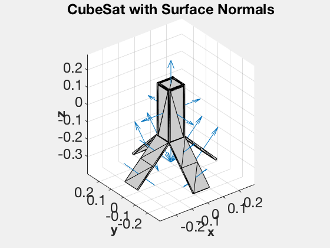
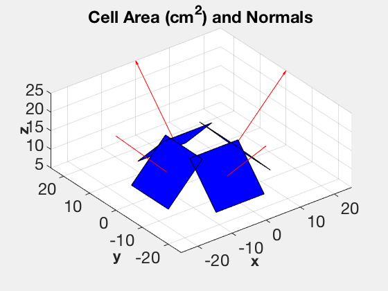

Contents
Design a 3U CubeSat with Tilted Wings
Specify data in the solarPanel field for CubeSatModel to define tilted wings.
See also RHSCubeSat, CubeSatModel, DrawCubeSat, DrawCubeSatSolarAreas, VOrbit, StructToText, QZero, Unit
%-------------------------------------------------------------------------- % Copyright (c) 2017 Princeton Satellite Systems, Inc. % All rights reserved. %-------------------------------------------------------------------------- disp('3U CubeSat with Tilted Wings');
3U CubeSat with Tilted Wings
Specify the solar panel geometry and construct the model
d = CubeSatModel( 'struct' ); d.massComponents = 3; d.solarPanel.dim = [100 100 10]; % [side attached to cubesat, side perpendicular, thickness] d.solarPanel.nPanels = 2; % Number of panels per wing d.solarPanel.rPanel = [50 -50 0 0;0 0 50 -50;-150 -150 -150 -150]; % Location of inner edge of panel d.solarPanel.sPanel = [1 -1 0 0;0 0 1 -1;-1 -1 -1 -1]; d.solarPanel.cellNormal = Unit([1 -1 0 0;0 0 1 -1;1 1 1 1]); % Cell normal d.solarPanel.sigmaCell = [1;0;0]; % [absorbed; specular; diffuse] d.solarPanel.sigmaBack = [0;0;1]; % [absorbed; specular; diffuse] d.solarPanel.mass = 0.1; [v, f, data] = CubeSatModel( '3U', d ); StructToText( data );
jD0: 2.4552e+06 mass: 5.39864 inertia (3,3): 0.117895 -0.000000 0.000000 -0.000000 0.098448 0.000000 0.000000 0.000000 0.048872 dipole (3,1): 0.000000 0.000000 0.000000 power: STRUCTURE power.solarCellEff: 0.29 power.effPowerConversion: 0.8 power.solarCellArea (1,4): 0.020000 0.020000 0.020000 0.020000 power.solarCellNormal (3,4): 0.707107 -0.707107 0.000000 0.000000 0.000000 0.000000 0.707107 -0.707107 0.707107 0.707107 0.707107 0.707107 power.consumption: 0.5 power.batteryCapacity: 100 surfData: STRUCTURE surfData.cD: 2.7 surfData.cM (3,1): 0.000000 0.000000 -0.037114 surfData.area (1,22): 0.030000 0.030000 0.010000 0.030000 0.030000 0.010000 0.010000 0.010000 0.010000 0.010000 0.010000 0.010000 0.010000 0.010000 0.010000 0.010000 0.010000 0.010000 0.010000 0.010000 0.010000 0.010000 surfData.nFace (3,22): 1.000000 0.000000 0.000000 -1.000000 -0.000000 -0.000000 0.707107 -0.707107 0.707107 -0.707107 -0.707107 0.707107 -0.707107 0.707107 0.000000 -0.000000 0.000000 -0.000000 0.000000 -0.000000 0.000000 -0.000000 0.000000 1.000000 0.000000 -0.000000 -1.000000 -0.000000 0.000000 -0.000000 0.000000 -0.000000 0.000000 -0.000000 0.000000 -0.000000 0.707107 -0.707107 0.707107 -0.707107 -0.707107 0.707107 -0.707107 0.707107 0.000000 0.000000 1.000000 -0.000000 -0.000000 -1.000000 0.707107 -0.707107 0.707107 -0.707107 0.707107 -0.707107 0.707107 -0.707107 0.707107 -0.707107 0.707107 -0.707107 0.707107 -0.707107 0.707107 -0.707107 surfData.rFace (3,22): 0.050000 0.000000 0.000000 -0.050000 -0.000000 -0.000000 0.100000 0.100000 0.200000 0.200000 -0.100000 -0.100000 -0.200000 -0.200000 0.000000 0.000000 0.000000 0.000000 0.000000 0.000000 0.000000 0.000000 0.000000 0.050000 0.000000 -0.000000 -0.050000 -0.000000 0.000000 0.000000 0.000000 0.000000 0.000000 0.000000 0.000000 0.000000 0.100000 0.100000 0.200000 0.200000 -0.100000 -0.100000 -0.200000 -0.200000 0.000000 0.000000 0.150000 -0.000000 -0.000000 -0.150000 -0.200000 -0.200000 -0.300000 -0.300000 -0.200000 -0.200000 -0.300000 -0.300000 -0.200000 -0.200000 -0.300000 -0.300000 -0.200000 -0.200000 -0.300000 -0.300000 surfData.att: STRUCTURE surfData.att.type: 'eci' surfData.att.qLVLHToBody (4,1): 1.000000 0.000000 0.000000 0.000000 surfData.sigma (3,22): 1.000000 1.000000 1.000000 1.000000 1.000000 1.000000 1.000000 0.000000 1.000000 0.000000 1.000000 0.000000 1.000000 0.000000 1.000000 0.000000 1.000000 0.000000 1.000000 0.000000 1.000000 0.000000 0.000000 0.000000 0.000000 0.000000 0.000000 0.000000 0.000000 0.000000 0.000000 0.000000 0.000000 0.000000 0.000000 0.000000 0.000000 0.000000 0.000000 0.000000 0.000000 0.000000 0.000000 0.000000 0.000000 0.000000 0.000000 0.000000 0.000000 0.000000 0.000000 1.000000 0.000000 1.000000 0.000000 1.000000 0.000000 1.000000 0.000000 1.000000 0.000000 1.000000 0.000000 1.000000 0.000000 1.000000 surfData.planet: 1 aeroModel: CubeSatAero opticalModel: CubeSatRadiationPressure atm: STRUCTURE atm.aP: 15 atm.f: 176 atm.fHat: 178.135 atm.fHat400: 146.296 kWheels: [] inertiaRWA: [] tRWA: []
Visualize the model
DrawCubeSat( v, f, data ); DrawCubeSatSolarAreas( data ); 
Check the RHS output with the model
Point the solar panels (+z) at the sun for the default epoch
uSun = SunV1(data.jD0); q0 = U2Q( uSun, [0;0;1] ); x = [7000;0;0;0;VOrbit(7000);0;q0;0;0;0;0]; t = 0; [~,dist,power] = RHSCubeSat( x, t, data ); StructToText( dist ); fprintf('Max solar power: %g W\n',power); %--------------------------------------
fOptical (3,1): 0.000000 0.000000 0.000000 tOptical (3,1): 0.000000 -0.000000 -0.000000 fAerodyn (3,1): 0.000000 -0.000002 0.000000 tAerodyn (3,1): 0.000000 0.000000 0.000000 tGG (3,1): -0.000000 0.000000 -0.000000 tMag (3,1): -0.000000 0.000000 0.000000 fTotal (3,1): 0.000000 -0.000002 0.000000 tTotal (3,1): 0.000000 0.000000 -0.000000 rho: 4.08773e-13 bField (3,1): -0.000010 0.000017 -0.000012 Max solar power: 18.5067 W